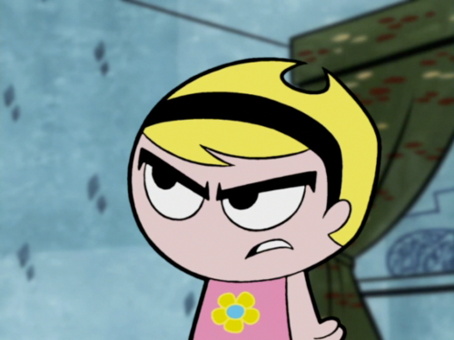
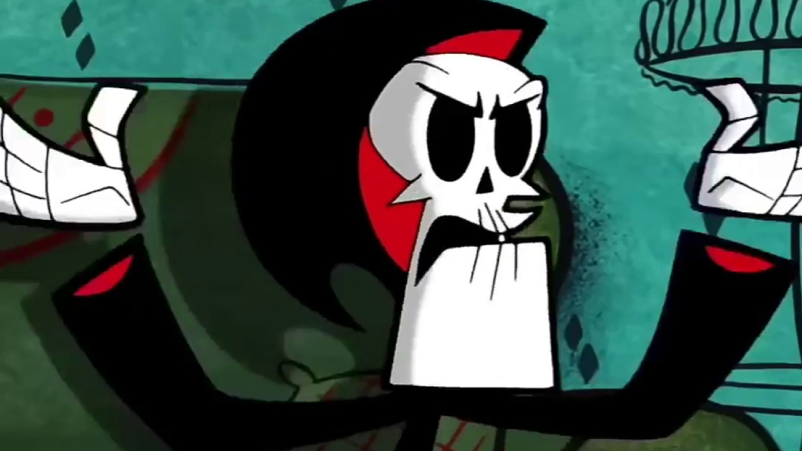
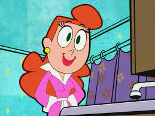
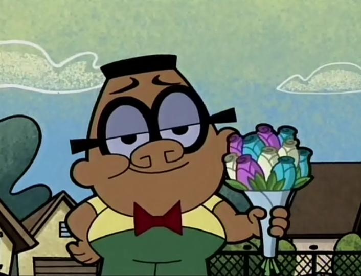
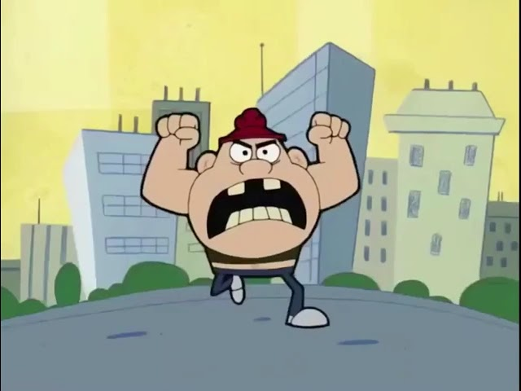
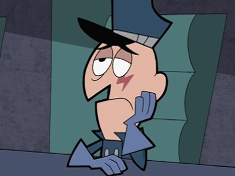

William Idiot (más conocido como Billy) es un niño corto de mente que se caracteriza por su carácter feliz, ingenuo y de gran corazón, además de un gran estómago que le permite comer grandes cantidades de comida y de una asombrosa capacidad de hablar largos diálogos de forma rápida.
Mandy es una niña inteligente y, a pesar de vestir un atuendo dulce, de personalidad siniestra, pues tiene un corazón oscuro y grandes deseos de dominar el universo. Su aspecto intimidatorio, su mirada, y el hecho de no sonreir nunca son factores que provocan el miedo en la gente.
Grim (conocido en Latinoamérica como Puro Hueso) es la mismísima personificación de la Muerte que, tras perder una apuesta relacionada con el hámster de Billy, está condenado a ser el mejor amigo de Billy y Mandy para siempre. Sin embargo, el término "mejor amigo" es utilizado vagamente, pues Puro Hueso es a menudo obligado a arreglar las consecuencias que dejan los accidentes provocados en gran parte por la estupidez de Billy y su falta de sentido común. Por parte de Mandy, Puro Hueso es a menudo obligado a hacer sus tareas y obedecer sus estrictas órdenes como su "amigo-esclavo". Debido a esto, Puro Hueso odia mucho a los dos jóvenes y a menudo sueña con sus horribles muertes para librarse de su condena.
Harold Idiot es el padre de Billy. Es tonto pero no tanto como Billy quien lo ve como un genio y trata de demostrar esto a otros. Harold se molesta a veces con las payasadas de Billy y le teme a su esposa. Cambia de trabajo cada dos por tres, ya que le despiden de todos. Segun un episodio, el es un Ex-SEAL de la marina de los Estados Unidos.
Gladys Idiot es la madre de Billy, una mujer neurótica amante de la limpieza, ya que se puede alterar con el tema de los gérmenes. Gladys se preocupa mucho por Billy y teme constantemente de que algo pueda sucederle.
Irwin es el mejor amigo de Billy, un niño afroamericano mitad momia por parte de madre, y mitad vampiro por parte de padre. A menudo se muestra un poco inocente, lo que le hace ser el blanco perfecto de los abusones o de las desgracias naturales que le suelen agarrar desprevenido, razón por la que es catalogado como fracasado. Irwin está completamente enamorado de Mandy, recibiendo siempre desprecio o incluso palizas por parte de ella, pero Irwin nunca llega a rendirse convencido de que algún día estarán juntos.
Valente es el matón local de los suburbios y el colegio de Endsville, un chico que suele meterse con los que son más débiles que él, ya sean niños como Billy o Irwin, adultos como Puro Hueso o incluso con las niñas. Sin emabrgo, se acobarda con los que puedan mostrar ser más fuertes e intimidantes que él, como Mandy. Detrás de esta fachada de chico duro se esconde un niño sensible que no ha recibido mucha atención e incluso que le asusta aquellos que son distintos a él, por eso prefiere meterse con ellos. Por otra parte, quiere mucho a su madre, siendo ese su punto débil.
El General Ernecio es un anciano de 60 años calvo, de estatura media, nariz puntiaguda, con un ojo de vidrio y una cicatriz en forma de rayo debajo de dicho ojo. Su difícil carácter e instintos dictatoriales le hacen perder los estribos a la primera, razón por la que le despiden en la mayoría de empleos que busca, aunque la jardinería y las palomas son capaces de calmarle. Él es vecino de Billy, joven al que odia profundamente por destrozar su jardín y desquiciarle cada dos por tres.